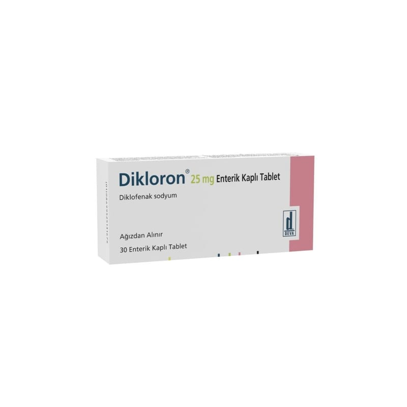

Dikloron 25 mg Enterik Kaplı Tablet, 30 Tablet

Ne için kullanılır
KT · Bölüm 1Her tablet 25 mg etkin madde (diklofenak sodyum) içerir. DİKLORON, ağrı ve iltihap tedavisinde kullanılan “steroidal olmayan iltihap giderici ilaçlar” (NSAİİ’ler) isimli bir ilaç grubuna dahildir. 30 ve 50 tabletlik ambalaj miktarlarında bulunmaktadır.
DİKLORON aşağıdaki rahatsızlıkların tedavisinde kullanılabilir: Kireçlenme (osteoartrit), eklemlerde ağrı ve şekil bozukluğu ile seyreden romatoid artrit, gençlerde eklemlerde ağrı ve şekil bozukluğu (juvenile romatoid artrit) ve sırt, boyun ve göğüs kafesi eklemlerinde sertleşme ile seyreden ağrılı ilerleyici romatizma (ankilozan spondilit) belirti ve bulgularının tedavisi ile akut guta bağlı eklem iltihabı (akut gut artriti), akut kas-iskelet sistemi ağrıları, ameliyattan sonraki ağrı (postoperatif ağrı) ve ağrılı adet görme (dismenore) tedavisinde endikedir. DİKLORON ’un nasıl etki gösterdiği ya da size neden verildiği konusunda sorularınız varsa lütfen doktorunuza danışınız.